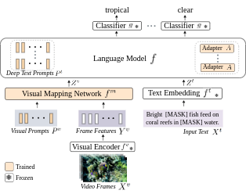
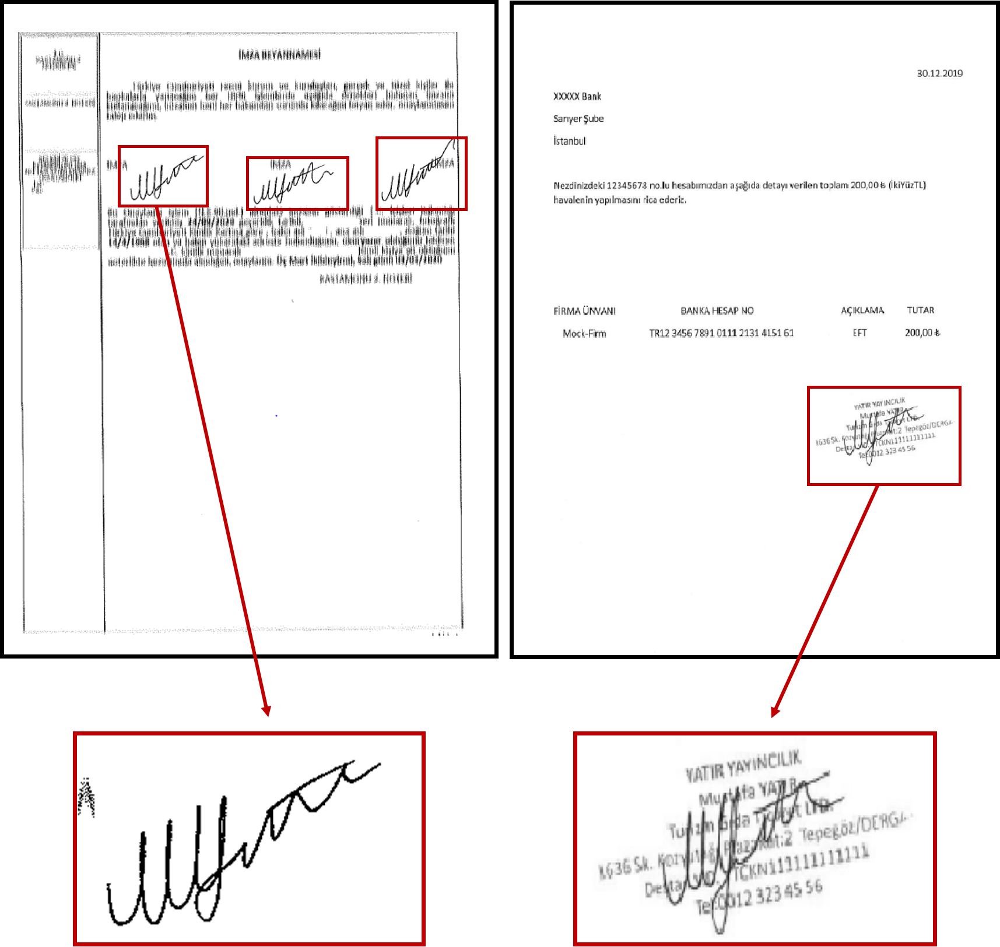
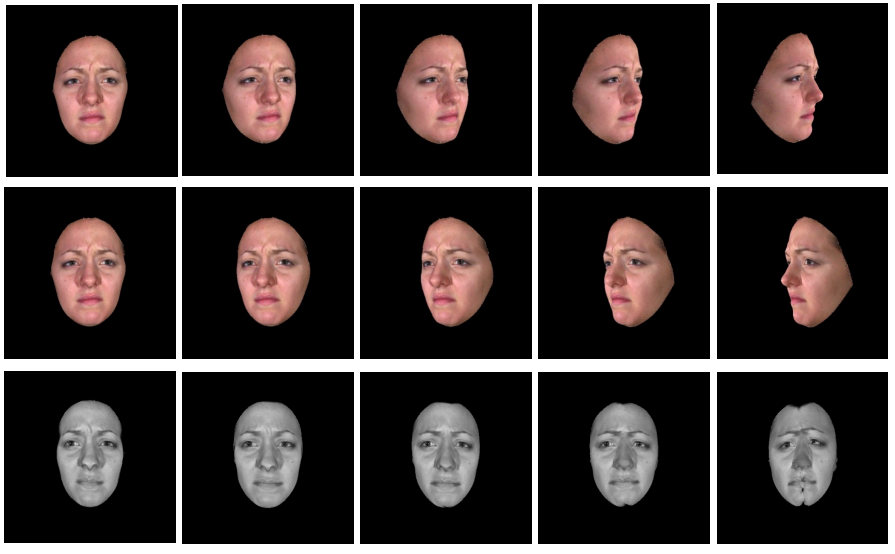

-
Deniz Engin
I'm a Computer Vision Engineer at Diffusely, working on the ProperShot product. I completed my PhD with the LinkMedia team at INRIA Rennes, advised by Yannis Avrithis. I received my BS and MS degrees in Electronics Engineering from Istanbul Technical University. My research interests include vision and language applications, focusing on video understanding, video question answering, and controllable image generation.
Email / Google Scholar / Twitter / LinkedIn / GitHub
-
News
- Feb. 2024 - I joined Diffusely as a Computer Vision Engineer.
- Jun. 2024 - I have successfully defended my PhD thesis!
- Oct. 2023 - ViTiS code released.
- Sep. 2023 - Preprint released at arXiv: ViTiS.
- Aug. 2023 - ViTiS accepted at ICCV 2023 CLVL Workshop as an oral.
- Nov. 2022 - I visited IARAI for two weeks.
- Jul. 2022 - I participated in ICVSS 2022.
- Jul. 2022 - I presented VideoQA paper at CAp & RFIAP 2022 as an oral.
- Oct. 2021 - I presented VideoQA paper at ICCV 2021 CLVL Workshop.
- Sep. 2021 - I participated in ELLIS Doctoral Symposium 2021.
- Aug. 2021 - Knowledge-based VideoQA code released.
- Jul. 2021 - Knowledge-based VideoQA accepted at ICCV 2021.
- Jul. 2021 - I participated in PAISS 2021.
- Mar. 2021 - Preprint released at arXiv: Knowledge-based VideoQA.
- Sep. 2020 - Starting my PhD at INRIA and InterDigital.
- Apr. 2020 - Paper on Signature Verification accepted at CVPR 2020 Biometrics Workshop.
Research
-
Video content has significantly increased in volume and diversity in the digital era, and this expansion has highlighted the necessity for advanced video understanding technologies that transform vast volumes of unstructured data into practical insights by learning from data. Driven by this necessity, this thesis explores semantically understanding videos, leveraging multiple perceptual modes similar to human cognitive processes and efficient learning with limited supervision similar to human learning capabilities. Multimodal semantic video understanding synthesizes visual, audio, and textual data to analyze and interpret video content, facilitating comprehension of underlying semantics and context. This thesis specifically focuses on video question answering to understand videos as one of the main video understanding tasks. Our first contribution addresses long-range video question answering, which involves answering questions about long videos, such as TV show episodes. These questions require an understanding of extended video content. While recent approaches rely on human-generated external sources, we present processing raw data to generate video summaries. Our following contribution explores zero-shot and few-shot video question answering, aiming to enhance efficient learning from limited data. We leverage the knowledge of existing large-scale models by eliminating challenges in adapting pre-trained models to limited data, such as overfitting, catastrophic forgetting, and bridging the cross-modal gap between vision and language. We introduce a parameter-efficient method that combines multimodal prompt learning with a transformer-based mapping network while keeping the pre-trained vision and language models frozen. We demonstrate that these contributions significantly enhance the capabilities of multimodal video question-answering systems, where specifically human-annotated labeled data is limited or unavailable.
-
Zero-Shot and Few-Shot Video Question Answering with Multi-Modal Prompts
Deniz Engin, Yannis Avrithis
ICCV Workshops 2023 [Oral Presentation]
abstract | pdf | project page | codeRecent vision-language models are driven by large-scale pretrained models. However, adapting pretrained models on limited data presents challenges such as overfitting, catastrophic forgetting, and the cross-modal gap between vision and language. We introduce a parameter-efficient method to address these challenges, combining multimodal prompt learning and a transformer-based mapping network, while keeping the pretrained models frozen. Our experiments on several video question answering benchmarks demonstrate the superiority of our approach in terms of performance and parameter efficiency on both zero-shot and few-shot settings.
-
 On the hidden treasure of dialog in video question answering
On the hidden treasure of dialog in video question answering
Deniz Engin, François Schnitzler, Ngoc Q. K. Duong, Yannis Avrithis
ICCV 2021
abstract | pdf | project page | codeHigh-level understanding of stories in video such as movies and TV shows from raw data is extremely challenging. Modern video question answering (VideoQA) systems often use additional human-made sources like plot synopses, scripts, video descriptions or knowledge bases. In this work, we present a new approach to understand the whole story without such external sources. The secret lies in the dialog: unlike any prior work, we treat dialog as a noisy source to be converted into text description via dialog summarization, much like recent methods treat video. The input of each modality is encoded by transformers independently, and a simple fusion method combines all modalities, using soft temporal attention for localization over long inputs. Our model outperforms the state of the art on the KnowIT VQA dataset by a large margin, without using question-specific human annotation or human-made plot summaries. It even outperforms human evaluators who have never watched any whole episode before. Code is available at https://engindeniz.github.io/dialogsummary-videoqa
-

Research on offline signature verification has explored a large variety of methods on multiple signature datasets, which are collected under controlled conditions. However, these datasets may not fully reflect the characteristics of the signatures in some practical use cases. Real-world signatures extracted from the formal documents may contain different types of occlusions, for example, stamps, company seals, ruling lines, and signature boxes. Moreover, they may have very high intra-class variations, where even genuine signatures resemble forgeries. In this paper, we address a real-world writer independent offline signature verification problem, in which, a bank’s customers’ transaction request documents that contain their occluded signatures are compared with their clean reference signatures. Our proposed method consists of two main components, a stamp cleaning method based on CycleGAN and signature representation based on CNNs. We extensively evaluate different verification setups, fine-tuning strategies, and signature representation approaches to have a thorough analysis of the problem. Moreover, we conduct a human evaluation to show the challenging nature of the problem. We run experiments both on our custom dataset, as well as on the publicly available Tobacco-800 dataset. The experimental results validate the difficulty of offline signature verification on real-world documents. However, by employing the stamp cleaning process, we improve the signature verification performance significantly.
-

In this paper, we present an end-to-end network, called Cycle-Dehaze, for single image dehazing problem, which does not require pairs of hazy and corresponding ground truth images for training. That is, we train the network by feeding clean and hazy images in an unpaired manner. Moreover, the proposed approach does not rely on estimation of the atmospheric scattering model parameters. Our method enhances CycleGAN formulation by combining cycle-consistency and perceptual losses in order to improve the quality of textural information recovery and generate visually better haze-free images. Typically, deep learning models for dehazing take low resolution images as input and produce low resolution outputs. However, in the NTIRE 2018 challenge on single image dehazing, high resolution images were provided. Therefore, we apply bicubic downscaling. After obtaining low-resolution outputs from the network, we utilize the Laplacian pyramid to upscale the output images to the original resolution. We conduct experiments on NYU-Depth, I-HAZE, and O-HAZE datasets. Extensive experiments demonstrate that the proposed approach improves CycleGAN method both quantitatively and qualitatively.
-

In this paper, we have explored the effect of pose normalization for cross-pose facial expression recognition. We have first presented an expression preserving face frontalization method. After face frontalization step, for facial expression representation and classification, we have employed both a traditional approach, by using hand-crafted features, namely local binary patterns, in combination with support vector machine classification and a relatively more recent approach based on convolutional neural networks. To evaluate the impact of face frontalization on facial expression recognition performance, we have conducted cross-pose, subject-independent expression recognition experiments using the BU3DFE database. Experimental results show that pose normalization improves the performance for cross-pose facial expression recognition. Especially, when local binary patterns in combination with support vector machine classifier is used, since this facial expression representation and classification does not handle pose variations, the obtained performance increase is significant. Convolutional neural networks-based approach is found to be more successful handling pose variations, when it is fine-tuned on a dataset that contains face images with varying pose angles. Its performance is further enhanced by benefiting from face frontalization.
See Google Scholar for all publications.